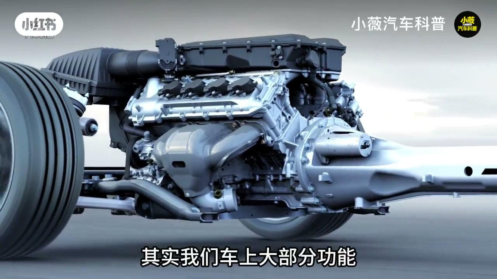
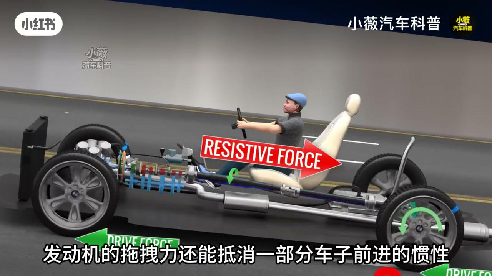
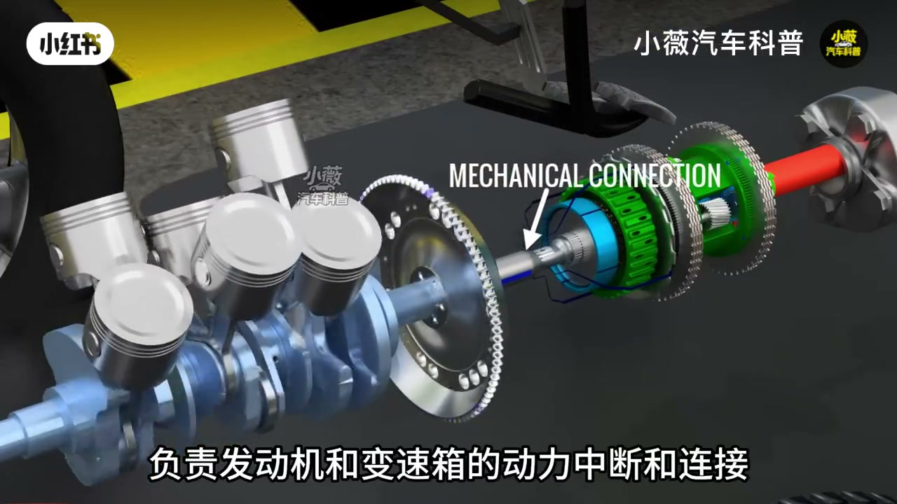
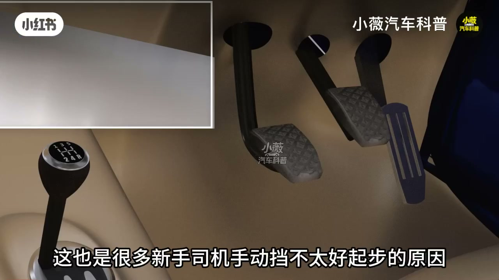
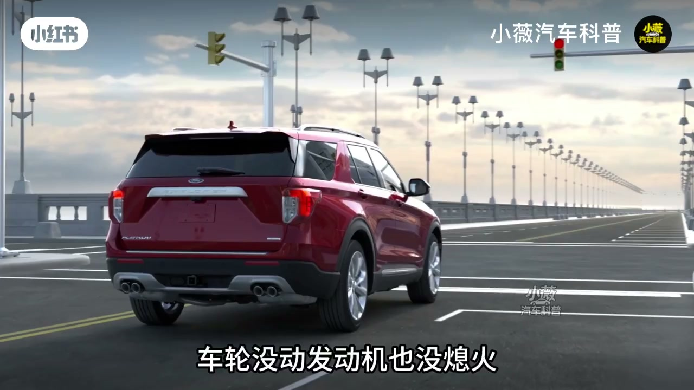
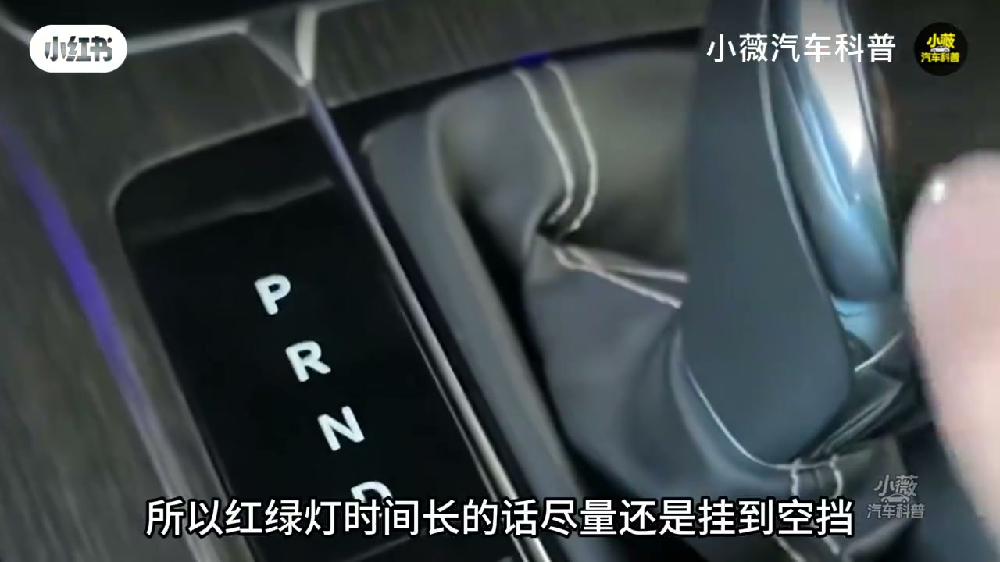

内容要点
「小薇汽车科普」回答粉丝追问：急刹时车轮像被「抱死」，为何变速箱不被憋坏、发动机也不熄火。核心不是刹车单干，而是发动机减速断油、发动机制动与离合器/液力变矩器断动力三套机制按车速切换。
知识结构
刹车要与发动机、变速箱配合，才能真正减速停车。
减速断油后发动机不出力；车轮反拖发动机形成发动机制动。
转速低于怠速会拖熄火，须用离合器中断动力。
手动踩离合；自动靠双离合或变矩器由 TCU 完成。
D 档踩刹动力断得不彻底会微窜；久等宜挂 N。
不熄火靠的是「中高速断油+发动机制动」与「低速切断动力」两套剧本；顿挫与怠速微窜，多半是断接时机或半联动没处理好。
00:00-00:50减速断油与发动机制动
开场把三个问题串起来：刹车时车轮被抱死、变速箱为何不被憋坏、刹车如何抵消发动机动力。回答是车上多数功能相互联动——刹车还要跟发动机、变速箱配合。
燃油车普遍有减速断油：中高速踩刹，发动机直接断油、不再产力；反过来车轮经传动系拖着发动机转，拖拽力抵消一部分惯性、缩短刹车距离，这就是发动机制动。但反拖只适合中高速——若发动机转速被拖到低于怠速，就会熄火。


00:50-02:26离合器中断与自动箱等价物
低速刹车与即将刹停时，必须把发动机与车轮之间的动力中断。动力路径要经过变速箱、差速器、半轴；发动机与变速箱之间的关键装置就是离合器。手动挡用离合踏板：踩下则动力中断，车轮只带着变速箱空转，拖拽到不了发动机，类似空挡。起步、换挡同样要先断动力，否则容易拖熄火或打齿。
自动挡没有离合踏板，但仍有断接装置：双离合仍是离合器，CVT/AT 则是液力变矩器，由变速箱 TCU 自动完成换挡与低速刹车时的断动力。顿挫往往就是中断与续接时机没控好。


02:26-03:20红绿灯半联动与挂 N
等红灯挂 D 踩刹：车轮不动、发动机不熄，此时离合器或变矩器处于断开，但 AT/CVT 与湿式双离合内部有油液，仍可传递一小部分动力——「断了但不彻底」，于是有轻微前窜感。
红灯久了尽量挂空挡，彻底断开动力，减少拖拽与发热，有助延长变速箱寿命。片尾预告下期讲刹车助力系统。


完整转录（100段）
以下文本由 Whisper medium 模型自动转录，可能存在少量识别误差，已尽可能修正。
刹车时车轮被爆死
变速箱为什么不会被憋坏
刹车又是如何抵消发动机动力的
上一期有粉丝提出了这样的问题
其实我们车上大部分功能
它都是相互联动的
不是说刹车就只管刹车了
它还要跟发动机变速箱配合
才能做到真正的减速停车
几乎所有的燃油车发动机
都有一个减速断油的功能
在中高速时踩刹车
发动机会直接断油
这时候发动机本身就不产生动力了
所以刹车也就不需要去对抗
而且是反过来
有车轮通过传动系统带着发动机运转
发动机的拖拽力
还能抵消一部分车子前进的惯性
缩短一些刹车距离
也就是常说的发动机制动
但这种车轮反拖发动机的方式
只能针对中高速
低速则不行
如果发动机的转速低于带速的转速
那发动机就会被拖熄火
所以在低速刹车和即将刹停时
又是另一套机制
需要把发动机与车轮之间的动力中断
发动机的动力想要传递到车轮上
要经过变速箱、叉速器、半轴
最后才能到达车轮上
而在发动机和变速箱之间
有一个非常重要的装置
负责发动机和变速箱的动力中断和连接
也就是离合器
手动挡车型上的离合踏板
就是控制它的开关
正常情况下它就是连接的状态
踩下去时
发动机与变速箱的动力就被中断
所以我们手动挡车型低速刹车时
要先踩离合踏板
先把动力断开
这时候车轮也就只带着变速箱空转
反拖拽力就到达不了发动机上
发动机也就是一个带速不传递动力的状态
类似空挡
这个离合器
起步和换挡时都会用到
起步时车子是静止的
静摩擦力非常大
如果发动机输出的动力对抗不了静摩擦力
那发动机就会被拖吸火
但油门踩大了
松开离合车子又会瞬间窜出去
这也是很多新手司机手动挡不太好
起步的原因
另外 换挡时也是需要先断开动力的
如果在动力传递过程中换挡
那变速箱的齿轮就很容易打齿磨损
所以换挡时才需要先踩离合中断动力
完成换挡后才松开离合踏板
让动力接上
而我们自动挡车型上
就已经没有了离合踏板
但它同样有中断动力的装置
双离合变速箱车型也是离合器
CVT变速箱和AT变速箱是业力变矩器
它们都有中断和连接动力的作用
不过是变速箱的TCU电脑自动完成
不需要我们驾驶员去操作了而已
但逻辑是一样的
换挡和低速刹车都需要断开动力
为什么有的车开起来有顿挫
其实也就是换挡时发动机的动力中断
和续接时机没控制好
还有等红绿灯时
挂在地挡踩着刹车
车轮没动 发动机也没熄火
这时候的离合器或业力变矩器就是断开的
但它也不是完全断开
像AT变速箱和CVT变速箱的业力变矩器
还有诗诗双离合
它们中断动力的装置内部都是有油液的
而油液的角动又可以传递一部分动力
但动力不多
简单说就是动力断了
但断得不彻底
所以会有车子轻微向前窜的感觉
红绿灯时间长的话
尽量还是挂到空档
彻底把动力断开
减少不必要的拖拽和发热
能适当延长变速箱寿命
下期咱们讲刹车系统中的助力系统
老板记得点个关注
经常看小微汽车科普
以后更会开车
也更会养车